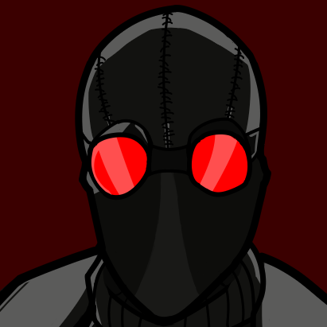
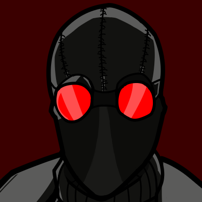

Work Samples:


 

Welcome and thank you for taking the time to look through my resume. My name is Jamal Simpson and I am currently enrolled at Seminole State College. I am currently working on my Art Emerging Media Track for BFA major. In my freetime, I work on digital illustration, mainly of my favorite characters from video games or comics. I am interested and have tried animating in the past but I have been focusing on illustration. In the future, I would like to work on digital illustration full-time or even work on designing logos for businesses. I am also considering entering the realm of game development and game design.